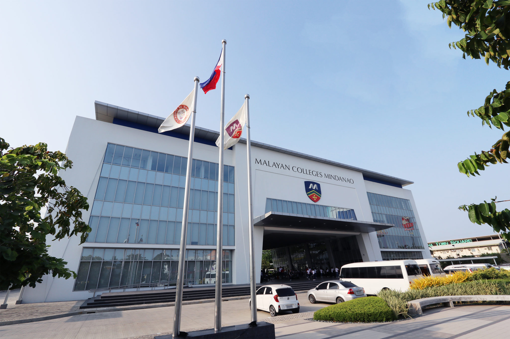
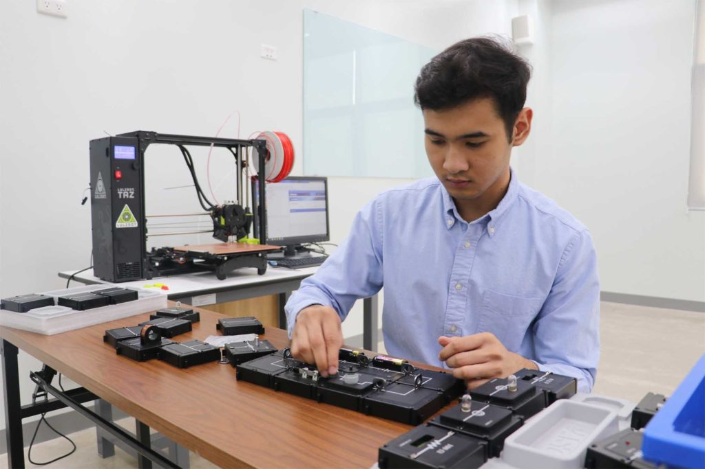

Utilize a different color scheme but make sure they complement one another.
Fill in the necessary details as instructed in the sections of the webpage
Malayan Colleges Mindanao
Excellence and Relevance

Mapúa Malayan Colleges Mindanao shall be a school of global standards and of great significance locally and beyond,
shall provide a learning environment in order for its students to acquire the attributes that will make them globally
competitive & locally in-demand, shall engage in cutting edge and economically viable research, development and innovation
that is relevant locally and beyond, and shall provide state-of-the-art solutions to problems of industries and
communities locally and beyond.
College of Engineering and Architecture

College of Engineering and Architecture (CEA) transforms its graduates to become globally competitive, innovative
leaders, socially responsible and result-oriented engineers and architects. MapúaMCM-CEA commits to educate students
imbued with good moral and ethical values while engaging economically viable research and innovation that is relevant
locally and beyond.